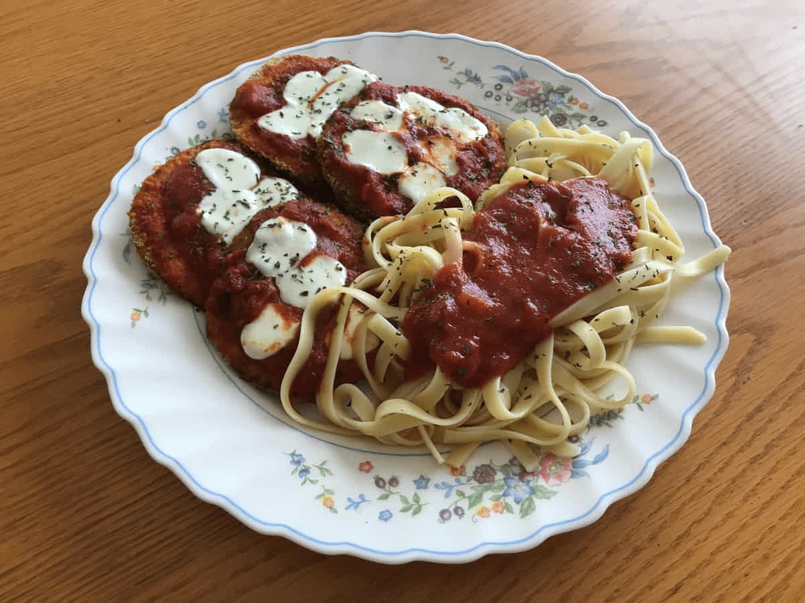

Berinjela ao Parmesão

Picante, cheia de queijo, e maravilhosa.
 Duração 45min
Duração 45min  5 Porções
5 Porções
Ingredientes do jogo: Berinjela, Tomate.
Essa receita restaura 175 de energia e 70 de saúde. Ela dá +1 de bônus de mineração e +3 de defesa.
Pode ser obtida com Lewis depois de ganhar 7 corações com ele e é vendida por 200g.
Ingredientes
- 1 berinjela
- 1 tomate grande
- Queijo mussarela
- 398mL de lata de molho de tomate
- 5 colheres de sopa de azeite de oliva
- 1½ xícara farinha de Rosca/Panko
- 1 ovo
- Ervas/temperos: manjericão, orégano, alho em pó, estragão, pimenta em pó,
sal, pimenta, tempero de pimenta vermelha assada e/ou tomilho.
Nem todos são necessários, mas o manjericão, o sal e a pimenta são prioritários.
Modo de Preparo
- Corte 8 fatias da berinjela. A berinjela que comprei era bem grande, então só precisei de 4 fatias, que depois cortei ao meio
- Quebre o ovo em uma tigela, adicione 1 colher de sopa de água e bata os dois juntos. Coloque a farinha de rosca em um prato. Você pode acrescentar algumas ervas à farinha de rosca, se quiser. Pegue as fatias de berinjela e passe-as na mistura de ovos e, em seguida, cubra-as com a farinha de rosca.
- Despeje o azeite em uma frigideira em fogo médio até que o óleo esteja quente o suficiente para chiar quando você colocar uma migalha de pão. Reduza o fogo para médio-baixo e coloque as fatias de berinjela na frigideira. Frite cada lado por cerca de 4 a 5 minutos. A farinha ficará dourada e as fatias de berinjela terão uma cor esverdeada.
- Corte o tomate e o queijo mussarela em fatias. Em uma assadeira pequena, coloque de 1 a 2 colheres de chá de azeite e incline-a para distribuí-lo uniformemente. Abra a lata de molho de tomate e despeje apenas o suficiente para cobrir o fundo da frigideira.
- Coloque a berinjela, o queijo e o tomate em camadas no prato. Polvilhe com uma pitada de cada erva/tempero. Eu tinha algumas sobras de queijo cottage, então coloquei por cima também.
- Despeje o restante do molho de tomate por cima e finalize com uma generosa porção de queijo mussarela ralado.
- Asse em forno a 180°C por 15-20 minutos ou até o queijo derreter e borbulhar. Deixe esfriar por 10 minutos e sirva em seguida. É um acompanhamento muito saboroso.
*Nota:“Berinjela ao parmesão” é um nome um pouco impróprio. Geralmente não há queijo parmesão de verdade.